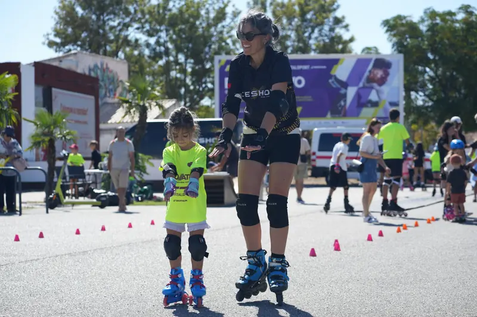
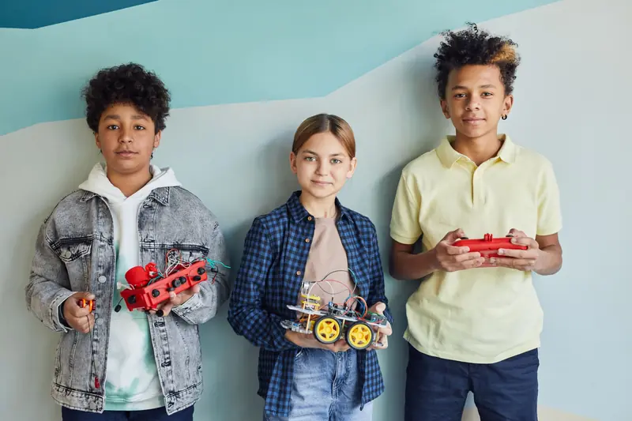

Skating meets STEM, right where your students are
A 6–8 week enrichment cohort we bring to your after-school program.

How it works
-
We come to you
We bring skates, gear, and STEM supplies to your site.
-
Students learn two ways
Each session pairs a skating skill with a hands-on STEM lesson.
-
They show what they learned
The cohort ends with a project and a skating performance.
A sample cohort
Weeks 1–2
Balance, safety, and STEM foundations.
Weeks 3–4
Glides and stops; forces and motion.
Weeks 5–6
Turns and rhythm; design a project.
Weeks 7–8
Rehearse and present at the showcase.
The showcase
Every student presents a STEM project and a skating performance matched to their level.

See skating in action
Practice example: a beginner skating guide from wikiHow, not a Rise and Roll lesson.
Read the steps from this video
- Put on a helmet and practice on flat pavement.
- Stand with your knees bent under your shoulders and your back straight, then take small steps to find your balance.
- Push off one foot while stepping the other forward, shift your weight onto the front foot, and lift the back foot to glide.
- Keep your feet parallel and lower your body slightly for more control.
- To stop, slide one foot forward and press the toe stop against the ground.
- Keep practicing; falling is part of learning.
Watch on YouTube (captions available there)